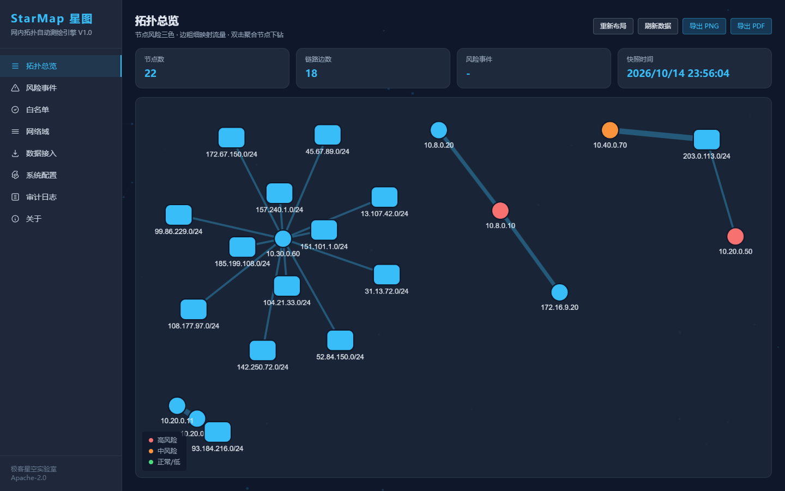
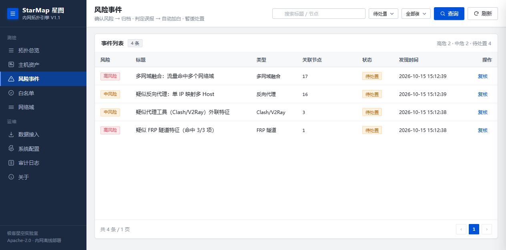
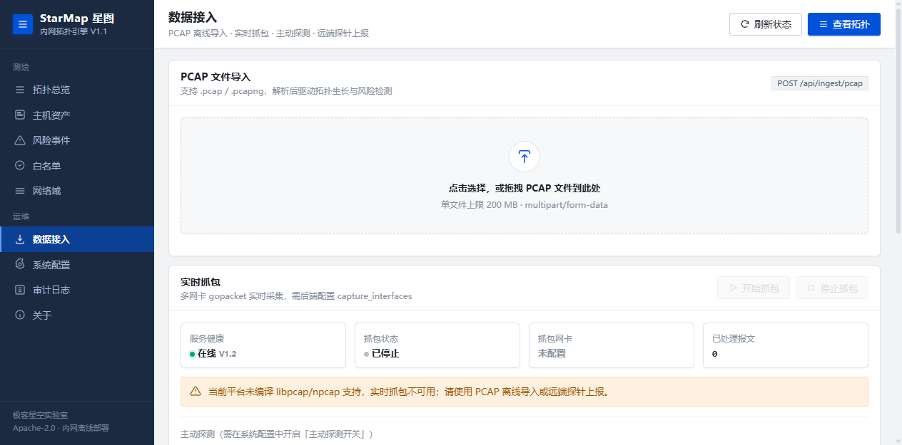

界面
标准网管拓扑 · 原生桌面质感




传统资产测绘回答"有哪些 IP"。StarMap 回答的是安全运营真正关心的问题：哪些设备在台账里，哪些是台账之外的影子设备。
流量自动发现的主机登记为「账外资产」，与人工登记的资产台账对照，账实不符一目了然。未登记主机离线超时自动清理，台账始终保持新鲜。
以流量发现为核心：PCAP 导入、网卡抓包、远端探针上报三路数据统一汇入，自动生长拓扑。不依赖主动扫描，部署即可持续感知。
对可疑行为仅产出特征标签（如"疑似 FRP 隧道特征"），不判定违规、不告警外发、不联动封禁、不解密流量。合规边界清晰，可在授权环境放心部署。
| 规则 | 特征 | 等级 |
|---|---|---|
| frp | Go-TLS JA3/JA4 指纹 + 长连接保活 + 周期小包心跳 | mid / high |
| clash | 随机高熵 SNI + 高频短间隔外联 + 持续陌生目的 | mid / high |
| reverse_proxy | 单内网 IP 映射 Host 数超阈值 | mid |
| unknown_egress | 对外端口/链路数超 1h 滚动基线（带学习期） | mid |
| multi_net | 同节点/MAC/网关命中 ≥2 个网络域 | high |
三路数据统一汇入 Aggregator → 拓扑引擎 → 检测 → 复核/审计，SQLite 持久化，前端 embed 内嵌。
┌────────────────────── StarMap（单二进制）──────────────────────┐ PCAP 文件 ──► │ ingest/pcapfile ─┐ │ 网卡抓包 ──► │ ingest/capture ─┼─► parser.Aggregator ─► topology.Engine ─┐ │ 远端探针 ──► │ ingest/probe ─┘ (五元组/MAC/SNI/ (节点/边/聚合/老化)│ │ │ Host/JA3/JA4) ▼ │ │ detect.Detector（周期评估）│ │ │ RiskEvent │ │ ▼ │ │ review（复核）+ audit（审计）+ assets │ │ │ │ │ store（SQLite，modernc 纯 Go 驱动） │ │ web/（embed.FS 内嵌）◄── api/server.go（Gin REST） │ └────────────────────────────────────────────────────────────────┘ 技术栈：Go · Gin · gopacket · modernc.org/sqlite · 原生 HTML/CSS/JS（零构建、零 CDN）



# 纯 Go 构建，无需 CGO CGO_ENABLED=0 go build -o starmap ./cmd/starmap ./starmap -config configs/config.yaml # 打开 http://127.0.0.1:8080
# 导入 PCAP，驱动拓扑生长 curl -F "file=@testdata/out/frp_tunnel.pcap" \ http://127.0.0.1:8080/api/ingest/pcap # 测试与验收 go test ./... bash scripts/e2e.sh